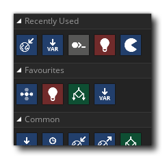

This section of the manual lists all the different actions available to you when using GML Visual to program your game. Below you can find each of the different Action Libraries available to you from the object GML Visual Toolbox, and within each library section the individual actions are explained, along with examples of use.
Apart from the above action libraries, you also have a Favourites library - which is a special section of the Toolbox where you can drag actions and so keep all the ones you use the most handy - and there is also the Recently Used library, which will hold the last 5 actions that you have used:
